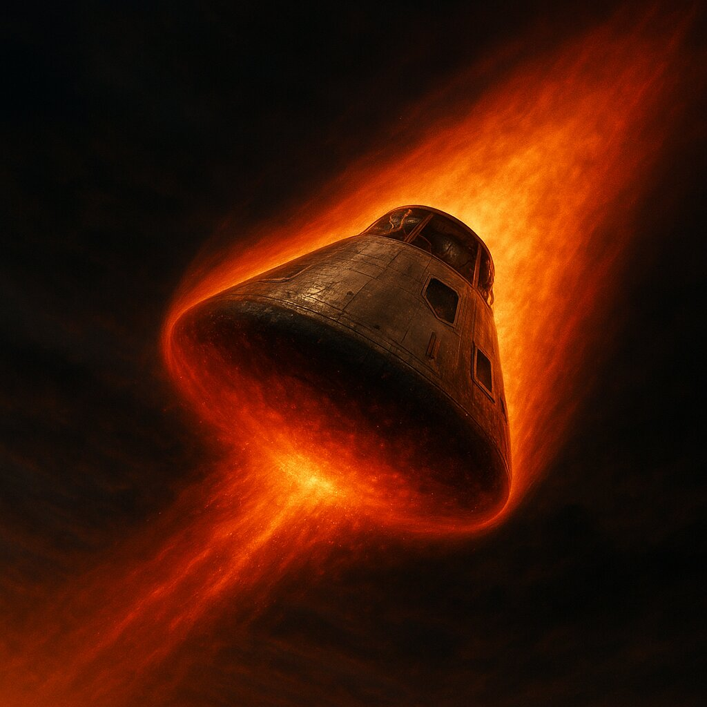

The Re-Entry Blackout

You know the physics from the last slide: at nearly 25,000 mph, Odyssey would wrap itself in plasma no radio signal could cross. Houston's entry data even predicted when the blackout would end: GET 142:44:24.
Nobody predicted what actually happened.
GET 142:36 - The Last Calls
KERWIN: "We just had one last time around the room, and everybody says you're looking great."
SWIGERT: "Thank you."
KERWIN: "LOS [loss of signal] is about a minute or a minute and a half... and welcome home."
SWIGERT: "Thank you."
At 142:40:46, Odyssey hit entry interface — 400,000 feet, the top of the atmosphere. Seconds later the plasma closed in, and the radio went to static.
Riding the Fire
Inside the capsule, deceleration built to about 5.6 Gs — the crew pressed into their couches at more than five times their own weight. Outside the windows: orange glow, then blinding white. The heat shield charred and burned away by design, carrying 5,000°F heat off into the slipstream.
The terrifying thought:
If the explosion six days earlier had cracked the heat shield, no one would know until it failed. The crew rode down in silence, waiting to find out if they'd live.
In Mission Control - Watching the Clock
In the front room, a few dozen controllers stared at dead telemetry screens — with hundreds more engineers waiting in the back rooms, and millions watching live on TV around the world. Nobody spoke.
- ⏱️ 142:44:24 — Predicted end of blackout. Static.
- ⏱️ Thirty seconds past. Static.
- ⏱️ A full minute past. This was now the longest blackout of any Apollo mission — and it wasn't over.
Mission Control had fought for four days to bring this crew 200,000 miles home. Had they lost them in the final minutes?
KERWIN (142:46:03): "Odyssey, Houston standing by. Over."
One second... two...
"Okay, Joe."
— Jack Swigert, GET 142:46:08Two words. Calm. Steady.
They were alive.
The Eruption
Mission Control exploded — cheering, crying, controllers pounding each other on the back after six days without a smile. In Houston, Marilyn Lovell and the four Lovell children heard Jack's voice and collapsed into each other's arms. Around the world, millions of people let out the same held breath at the same moment.
Why Did the Blackout Run Long?
No one planned it. Odyssey crossed into the atmosphere at about -6.2° instead of the -6.5° target — the trajectory had drifted shallow from the LM's venting (see previous slide). A shallower entry meant a longer, flatter ride through the plasma:
- Total radio silence: about 6 minutes — the longest of any Apollo mission
- The silence ran roughly 87 seconds past the predicted end before a signal finally punched through — and a few seconds more before Houston heard a voice
- Heat shield: intact. Trajectory: safe. Crew: alive.
📡 Signal Acquired
The heat shield had held.
They'd survived the fire.
Now they just had to land.
Radio calls above are verbatim from the mission transcript in the Apollo 13 Flight Journal.